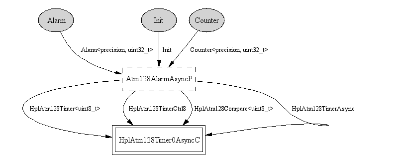

Build a 32-bit alarm and counter from the atmega128's 8-bit timer 0 in asynchronous mode. Attempting to use the generic Atm128AlarmC component and the generic timer components runs into problems apparently related to letting timer 0 overflow. So, instead, this version (inspired by the 1.x code and a remark from Martin Turon) directly builds a 32-bit alarm and counter on top of timer 0 and never lets timer 0 overflow.
